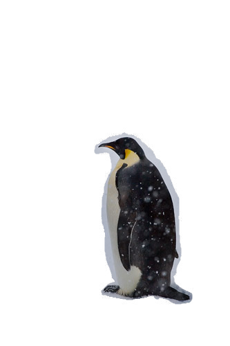

Gradient Domain Fusion
Toy Problem
For the toy problem, we attempt to reconstruct the full input image from only its gradients in addition to the intensity of a single pixel -
we arbitrarily chose the top left pixel, located at coordinates (x=0, y=0). To do this, we
construct a system of linear equations Av = b, where v
is the flattened vector corresponding to the reconstructed image. Each row of the equation matrix corresponds to either a
horizontal or vertical gradient between two adjacent pixels. Solving this system using least squares recovers the vector v, which we
reshape into the 2D image. The result looks identical to the input image!
Poisson Blending
The objective for this problem is similar to, but a little bit more complex than the toy problem.
In this case, we aren't blending the entire image, but only a region specified by an inputted mask.
The mask generates a source region S, and each pixel in this region has
a corresponding output pixel in the output vector v.
Each pixel in the region generates 4 gradient equations, one for each of its 4 neighbors in the horizontal and vertical directions.
If the neighbor pixel is outside of the source region, we can calculate the output gradient using the background image's pixel instead.
Note: In order to prevent excessive memory usage, I use
scipy.sparse matrixUsing v to denote the output image, s for the (foreground) source image, and t for the (background) target image, the objective becomes:

Results:

Hikers in snow

Penguin (masked)
Blended Image
Pool
Shark (masked)
Blended Image

Campanile
Moon (masked)
Blended Image
Laplacian Pyramid Image (Project 2)
The good and the bad:
For the shark/pool image we can see very visible blurring around the edges of the shark, made obvious due to the tiled texture of the pool floor.
This is because we take the gradients from the shark image to reconstruct the blended region, and end up losing the gradients created by the tile lines. I deal
with this issue a bit better in the mixed gradients (bells and whistles) section.
For the campanile/moon image, the moon ended up looking more like a sun because it blended with the very bright sky. Overall though, the seams are much better
than the Laplacian pyramid blending from project 2. In project 2, we had to select the mask much more carefully, and there was a strange shadow behind the moon.
Bells & Whistles (Mixed Gradients)
The mixed gradients problem is nearly identical to the regular problem, except we will use the target image's gradients in the objective if it has a larger magnitude than the source gradient.
As mentioned before, this allows us to preserve some of the textures of the background image in the blended region.
In this example, I try to blend a birthday card onto a brick wall. Notice that the mask covers the entire card and includes a lot of white space.
Using the previous part's Poisson blending approach (without mixed gradients), we get a very blurry-looking rectangle. The lines from the bricks appear to have been blurred out.

Colorful Wall
Birthday Card (masked)
Regular (Not Mixed) Blended Image
Using mixed gradients, the details of the wall are much more visible behind the card. It looks like the paper has melted right into the wall!
Mixed Gradients Blended Image